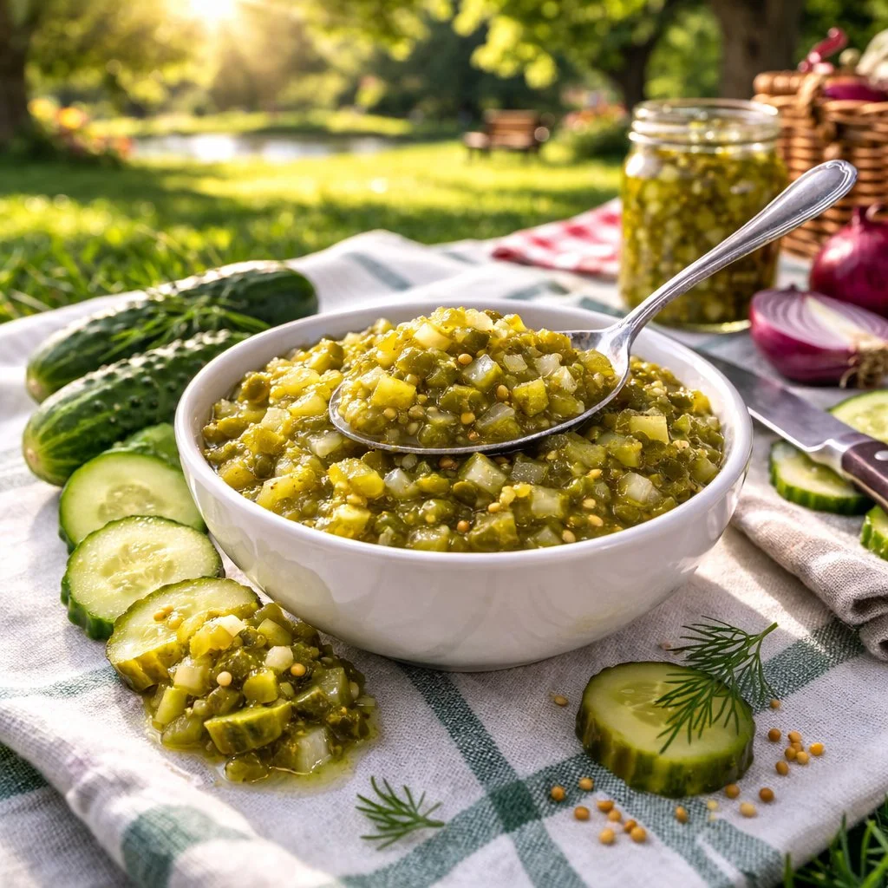

AthiTerra Product
Balanced Flavour, Endless Possibilities
AthiTerra's gherkin relish is finely processed from premium gherkins to deliver a perfectly balanced sweet and tangy profile. Available in standard or custom formulations, our relish is ideal for private label brands, food service operations, and industrial ingredient use.
Key Features
Expertly crafted flavour profiles ranging from classic sweet relish to tangy dill — or create your own custom blend.
We produce relish to your exact brand specifications — flavour profile, texture, packaging, and labelling all customisable.
Consistent quality and texture designed for high-volume food service operations — from stadiums to restaurant chains.
Made with natural ingredients only — no artificial preservatives, colours, or flavourings. Clean label ready.
Common Questions
Yes. We offer custom relish formulations with adjustable sweet/tangy profiles, spice blends, and texture. This is ideal for private-label brands. See our custom solutions page for more.
Our relish is made from premium-grade diced gherkins with balanced sweet and tangy profiles using natural ingredients only — no artificial colours, flavours, or preservatives. Clean-label ready.
Yes. Gherkin relish is available in glass jars for retail, pails for food service, and drums for industrial buyers. Custom packaging and labelling options are also available for private-label partners.
Interested in Gherkin Relish?
Get in touch with our team for samples, pricing, and custom specifications.